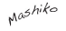

The Aquarium sessions produced over 23 hours of music and soundscapes between Psychic Summit, Morgan Kuhli & Liteworks. Our soundscapes were captured in surround at natural locations. All music was composed in sync with the visuals.
The 'Psychic Summit: Aquarium' album includes our favorite tracks from these sessions. This musical collaboration will be released on digital and vinyl in 2011. If you enjoyed our music, please look for Morgan Kuhli's soon-to-be released album 'Infinite Psychic Translations'.
Aquarium 2 is the newest installment in Communal's growing Landscape series. Shot with cinema lenses in 4k with Red One cameras at prime locations such as the Seattle Aquarium and private enthusiast aquariums. Encoded from the original 4k masters specifically for Blu-ray and HD. Expanded experiences and environments. Intelligent viewer friendly menu systems. Over 10 new scenes and chapters including Clown Fish, hypnotic Jellyfish, Cardinals & more in saltwater and freshwater aquariums.
An advanced high definition audio engine delivering the best quality sound for Blu-ray, Software and Life.
Turn on fun and informative facts about the ocean, its inhabitants and more.
'Sustainable Cooking with Hajime'. Join Hajime, owner and head chef of Seattle's Mashiko (and Aquarium enthusiast!), for a sustainable Japanese cooking lesson. Since 1994, Mashiko has given Hajime a way to share his thoughts on food and culture. This has paved the way for another passion – sustainability. As of 2009, Mashiko is Seattle's first fully sustainable sushi bar.

PS. Look for easter eggs.
90 Minutes | Color | Stereo, Surround | 1080p / 1920x1080 | 24p | English | BD25 & DVD in the same release
Best Buy, Target, Costco, Amazon.com or your favorite local shop. Ask or search for 'Aquarium 2'. Aquarium 2 is distributed in North America by Topics Entertainment.